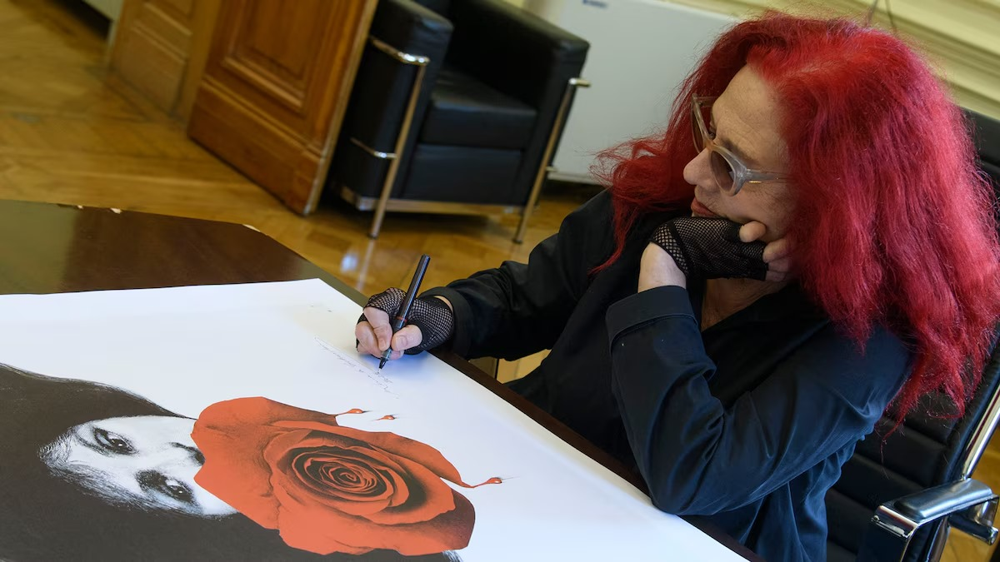
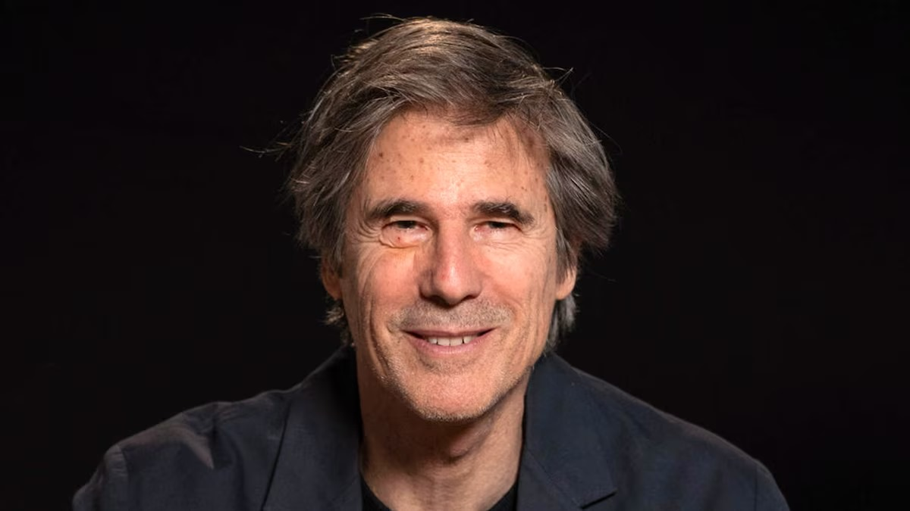
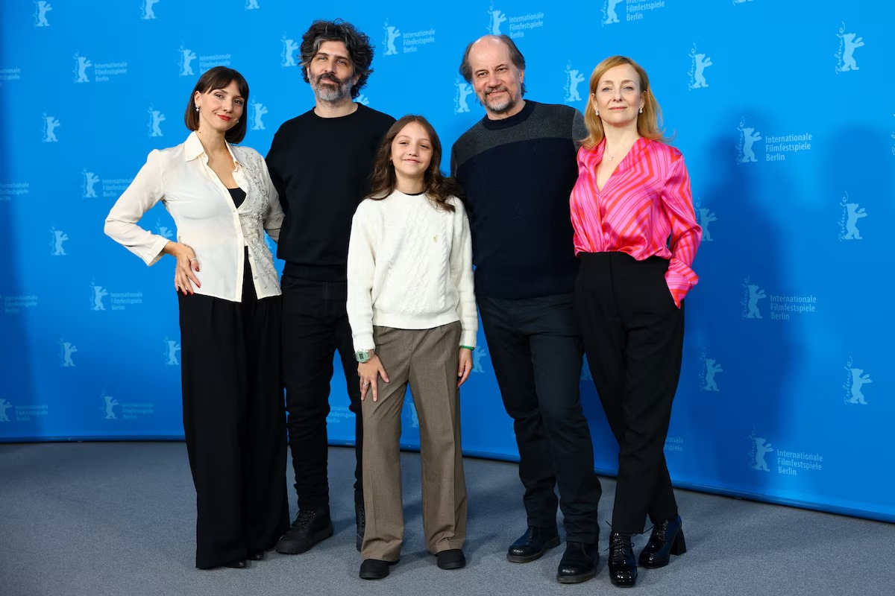
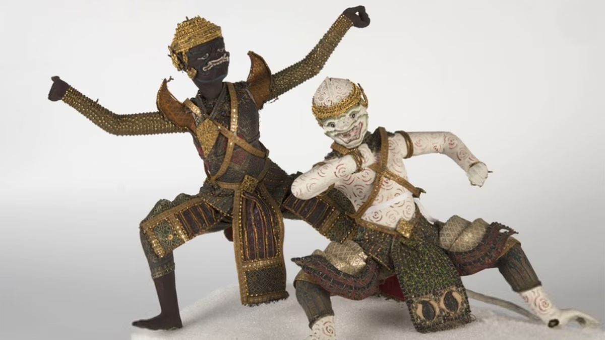
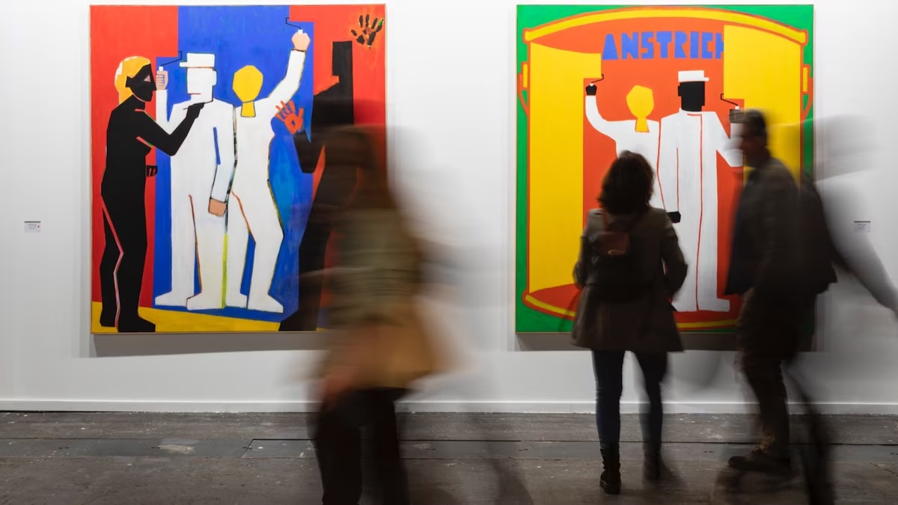
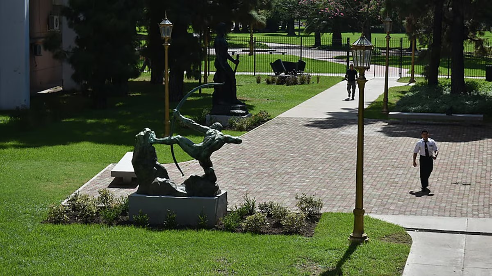

El Colón anunció el estreno de “Carmen”, con dirección de Julio Bocca y diseño visual de Renata Schussheim
Teatro Colon
La puesta, de Bizet, incluye dirección musical de Zoe Zeniodi, con coreografía de Marcia Haydée y se presentará en una serie de funciones programadas para abril
Walter Salles: “El Oscar te pone en el centro del mundo”
Oscars
El cineasta brasileño, director de “Aún estoy aquí”, que posee tres nominaciones, afirmó estar “escéptico” y que de ganar lo “compartiría con el cine iberoamericano”
“El mensaje”, la película argentina que compite en Berlín, tuvo buena recepción en su estreno
Cine Argentino
Con un enfoque onírico y fotografía en blanco y negro, Iván Fund ofrece un relato sobre infancia, amor y el peso del pasado. “Es una historia que no cierra ninguna puerta del todo”, dijo el director
Países Bajos restituye a Nigeria 113 “bronces de Benín” saqueados en el siglo XIX
Piezas historicas
Las piezas, tomadas por tropas británicas en África, estaban en un museo neerlandés y volverán a su lugar de origen en medio de una política de restitución cultural por parte de países europeos
Con fuerte presencia latinoamericana, ARCO Madrid tendrá al Amazonas como tema central
Museos
Del 5 al 9 de marzo, la gran feria de arte española contará con 214 galerías de 36 países
Abrió el Paseo de las Esculturas del Bellas Artes
Esculturas
El espacio, abierto al público de 2.000 metros cuadrados, conecta los dos edificios que componen al Museo Nacional